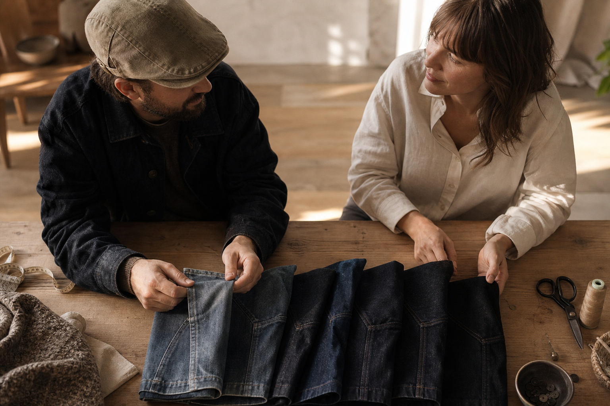

A low crown that sits flat
Cut low so it stays put and takes the wind and the sun off his face, without the bulk he'd feel above his head all day.
For the woman buying it for him
The Ashcroft Denim adjusts at the side. You can't get the size wrong.
Ask him what he wants and he'll say nothing. Then he'll reach for the same faded ball cap on the way out.
So the decision is yours. The only thing stopping you is his head size, and you don't have it.
You don't need it. One size, side adjustment, set once on his own head. No tape measure while he sleeps. No surprise ruined.
You're not correcting him. You're giving him the cap he'd have chosen, if he ever chose anything for himself.
Free worldwide shipping · 100-Day Fit Guarantee
Free worldwide shipping on every order, no minimum. A hundred days to send it back for a full refund if it doesn't fit or you're simply not satisfied. Payments encrypted, card details never stored. Support answers seven days a week, at any hour, at help@ashcroft-flatcaps.com.
What you see every morning
He doesn't see the difference anymore. You do.
It's faded. The brim has gone soft. He's had it since before the grandkids, and every time you mention it he says it's fine, it still works, why replace something that still works.
So put the two side by side instead of arguing about it. Same head, same jacket, same walk out the door on a Saturday morning. One of them makes him look like he stopped bothering. The other is the one the man at the market was wearing, standing like he meant it.
He hasn't stopped bothering. He just won't spend a cent on himself, so nothing changes on its own. That's the part that gets you. Not the cap. The fact that he'd wear it another five years rather than ask for anything.
| The Ashcroft Denim (Flat Caps) | Alternative | |
|---|---|---|
| How it looks after all these years | Washed denim, soft from the first day, picking up a patina that only gets better with wear | Faded fabric and a brim that has gone soft, worn since before the grandkids |
| How it sits on his head | A low crown that sits flat, cotton lining that leaves no mark on his forehead | The same shape it has always had, reached for out of habit rather than comfort |
| What it says about him | A considered cap in an understated shade, the finished version of what he already puts on | A cap that makes a man who is better looking than that look like he stopped bothering |
| How it ever gets replaced | It comes from you, decided for him, so the change actually happens | It doesn't. He won't spend a cent on himself, so nothing changes on its own |
The decision
And that's the one question this cap answers for you.
He won't spend a cent on himself. Not on a jacket, not on shoes, and certainly not on a hat. So if he's going to have anything good, it comes from you. That isn't interfering. That's the only way it happens.
So you've been circling it for weeks. Not because you doubt the gift, but because you can't get a tape measure round his head without giving the whole thing away.
The Ashcroft Denim adjusts at the side. He sets it himself, on his own head, the moment he unwraps it. You don't need a number. You never did.
The size question, answered
You don't order against a measurement you don't have. He adjusts it himself, the first time he puts it on.
That's the whole point of the side adjustment. There's no size to guess, no tape measure hidden behind his back, no surprise ruined. He pulls the strap, closes the brass buckle, and it's set. One time.
From there the tension spreads evenly all the way around, instead of gripping in two spots and sliding forward every twenty minutes. It sits low and steady, whatever the shape of his head, and it stays there through the morning.
That range covers the bigger heads standard one-size caps quietly leave out. Complaints about caps being too tight are common enough across the market to be taken seriously, and this is the answer to them: one cap, adjusted on him, not against a number.
The bigger-head question
If he's spent years saying caps are too tight, this is the part that changes.
Most one-size caps are one size in name only. They're built around an average head, and the men outside that average feel it within ten minutes: the pinch above the ears, the red line across the forehead, the cap that comes off before lunch.
The side adjustment doesn't stop where those caps stop. It opens out past the standard range, so a bigger head is simply another setting on the strap, not a size you have to hunt for. He sets it wide, and it stays wide.
One Ashcroft customer, at 62 cm, put it plainly: "Finally a cap that fits my big head." You don't need to know his measurement. You only need a cap that can reach it.
What he'll feel, not what you'll tell him
Three things he'll notice by the end of the first afternoon, without you having to explain a single one.
A man who has worn the same ball cap for years doesn't compliment a hat. He tests it. He puts it on, goes out to the garage, comes back in, and forgets he's wearing it. That's the whole review.
What he'll notice, if he notices anything at all, is what stops happening: no band digging a line into his forehead, no cap creeping forward, no reaching up every ten minutes to set it straight.
It's washed, so it's already soft the day he unwraps it. No breaking-in period, no stiff week. And it picks up a patina with wear, which means the version he'll like best is the one he makes himself.
Cut low so it stays put and takes the wind and the sun off his face, without the bulk he'd feel above his head all day.
Soft against the forehead, so there's no mark left behind when he takes it off at the table.
Comfortable the first time he wears it, and better-looking every month after.
Where he'll wear it
An understated shade that asks nothing of him: no new wardrobe, no new version of himself.
He won't rebuild his closet for a gift. He doesn't have to. The shade is understated enough to sit under the same jacket he's worn every Saturday for years, over the same shirt, with the same boots.
Saturday market. The garden centre. Coffee with the neighbour. It's the cap he reaches for on the way out, not the one he saves for occasions that never come.
That's the difference between a present that gets worn and one that ends up in the closet: you're not asking him to change. You're giving him the finished version of what he already puts on.
Choosing his shade
Two collections, one rule: pick the tone he already reaches for without thinking.
Don't pick the shade you'd want him to wear. Pick the one that disappears into what's already hanging by his door.
The Washed Denim Collection is the softer route: washed denim that's soft from day one and takes on a patina as he wears it. The Signature Denim Collection holds a cleaner, more finished line. Both stay in understated tones that go with everything, so nothing you choose can clash with him.
Ashcroft, Mariner, Blackthorn, Cotswold, Chestnut, Claret, Sherwood, Admiral, Onyx, Forge, Tidewater, Foreman, Newport, Railroad, Prairie.
| The Ashcroft Denim (Flat Caps) | Alternative | |
|---|---|---|
| The Washed Denim Collection | Washed denim, soft from the first day, a patina that only gets better with wear | The Signature Denim Collection: a cleaner, more finished denim line |
| How it sits with his wardrobe | Understated shade that goes with everything he already owns | Same rule across both collections — no shade here fights his jacket |

Voices from other buyers
Customer reviews gathered on marketplaces like Etsy and Amazon, quoted word for word.
The reactions below aren't Ashcroft reviews. They're public marketplace verbatims from people who did what you're about to do: order a flat cap for a husband who would never order one himself.
Read what they report, not what we'd like you to believe. The gift was opened. It fit. And it kept getting worn.
Ashcroft's own promise sits underneath all of it: 30,000+ satisfied customers, free worldwide shipping, and a 100-Day Fit Guarantee if his reaction isn't the one you hoped for.
Ordered a newsboy cap for my husband a year ago — he loved it. Great quality hats with fast shipping.
Public review, Etsy marketplace
My husband loves the caps — well-made and attractive, with fast and secure shipping.
Public review, Etsy marketplace
He's received plenty of compliments and we both think it looks fantastic.
Public review, Amazon marketplace
He wears it everywhere.
Public review, Etsy marketplace
Said out loud
Not the polite version. The ones that have kept this in your basket.
You've ordered for him before. It arrived thin, badly stitched, nothing like the photo, and you quietly threw the receipt away. That fear is earned, and it's the one complaint that comes back hardest across cheap flat caps sold online.
The rest answers itself. Washed denim that's soft the first day and takes a patina instead of wearing out. A leather strap and brass buckle he sets once on his own head, so there's no size to get wrong. And if he doesn't reach for it, a hundred days to send it back for every penny.
Washed denim, soft cotton lining, a peak sewn to last, a real leather strap and a brass buckle. It ages into a patina rather than falling apart, and if it doesn't look like the photos, it goes back.
The caps that stay in the closet are the ones that pinch. This one he adjusts himself, at the side, and it sits low and steady all day. Wives buying elsewhere report the same thing in their own words: "He wears it everywhere."
You're not replacing him, you're replacing a worn-out ball cap. An understated shade that goes with everything, handed over as what it is: you saw something good and thought of him.
100-Day Fit Guarantee
You order it. He tries it. Only then does the decision become final.
A hundred days is long enough for the gift to prove itself. If the cap doesn't fit him, you get a full refund. If it fits and he simply isn't taken with it, you get a full refund too. No condition beyond that, no argument to make.
Shipping is free worldwide, on every order, with no minimum. Payment details are encrypted and never stored. And if something needs sorting out, support answers 24/7 at help@ashcroft-flatcaps.com.
So the only thing you're committing to right now is letting him unwrap it.
100 days to change your mind, free worldwide shipping
Before you order
Practical answers for someone buying for another person.
You don't measure it. It's one size with a side adjustment: a leather strap and a brass buckle he sets once, on his own head. That covers bigger heads too, the ones standard one-size caps leave out.
The cut is a low crown that sits flat, in an understated shade that goes with everything he already owns. It reads as a considered cap, not a costume.
A proper flat cap: sewn peak, washed denim that's soft from day one and takes on a patina, soft cotton lining that won't press into his forehead.
You have 100 days. Full refund if it doesn't fit or simply doesn't satisfy.
Support is available 24/7, or write to help@ashcroft-flatcaps.com.
The moment you're actually buying
He won't say much. He'll just keep it on.
He opens it, turns it over, sets the strap on his own head. Then he catches himself in the hallway mirror and stands a little straighter. That's the second you paid for.
And it costs you nothing to find out: $29.99 instead of $59.98, buy two flat caps and the third is free, free worldwide shipping anywhere in the world. If he doesn't wear it, you have a hundred days to send it back for every penny.
The only risk left is waiting for him to buy it himself.
50% off · Buy 2, get 1 free · Free worldwide shipping · 100-Day Fit Guarantee